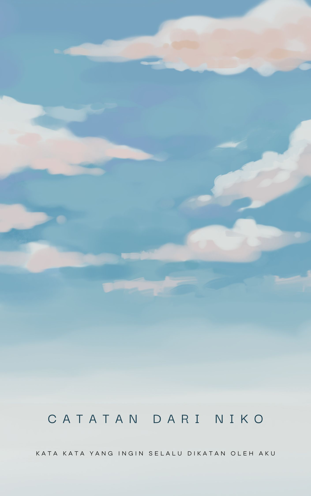

Terima kasih untuk kehadiranmu
9 Agustus 2024, pertama kali kita bertemu dan disaat itu aku masih belum meyakinkan diri ku sendiri kalau aku memang sedang jatuh cinta. Seiring berjalannya waktu entah mengapa melihat kamu selalu muncul dipikiran ku, disaat itu lah aku baru sadar bahwa aku sedang jatuh cinta. Kamu datang disaat aku udah hopeless tentang percintaan dan berada di titik terbawah. jatuh cinta kali ini terasa, damai tidak mengejar atau pun berlari. terima kasih sudah hadir di sela kesibukan, risuhnya keluarga. aku doakan kamu tiap saat dengan cara ku sendiri.
"pilihanmu, bahagiaku"
semua pilihan yang kamu pilih aku akan selalu support walaupun pilihan itu bukan tentang aku. aku berada di fase dimana melepaskan kamu adalah wujud cinta terbesar ku. kita mulai jalan ke arah tujuan hidup kita masing-masing. kamu menemukan seseorang yang bagi kamu memang baik untuk kamu, aku akan senang jika mendengarkan kabar itu. karena itu semua pilihan kamu sendiri.
"kesan berharga dari pertemuan singkat"
tentang diriku aku pun tak tahu, pertama kali di hidupku merasakan rasa ini. pertemuan kita cuma sebentar, aku harap di waktu yang sebentar ini aku bisa meninggalkan kesan yang berharga bagi kamu. aku akan selalu ada untuk kamu.
"rasa yang tak terjelaskan"
jangan tanya kenapa aku bisa kaya gini ke kamu karena aku sendiri tidak tahu. terima kasih sudah mau mendengarkan cerita aku dan mau bercerita ke diri aku ini. walaupun memang ini adalah hal yang simple dan biasa saja bagi kamu, tapi sangat berharga untuk diriku ini, sungguh sangat berharga.
"aku cinta kamu"
aku akan bilang sekali lagi, aku cinta kamu. semua hal tentangmu membuatku jatuh, tidak peduli apa perkataan orang lain, kamu adalah sosok "sempurna" bagiku.
"mendoakan dalam perpisahan"
disaat aku sudah menuju kuliah, menempuh arah tujuan hidupku, dan kamu menempuh ke arah tujuan hidupmu juga, aku akan selalu mendoakan kamu. terima kasih sudah ada bagiku walaupun waktu kita cuma sebentar banget.
"maaf dan rasa syukur"
kamu tidak akan mengerti bagaimana rasaku ini ke kamu, bagaimana kamu berpengaruh sekali di hidupku ini. aku minta maaf kalau aku terkadang ngebuat kamu kesel, marah, atau sakit hati dengan kata-kataku. percayalah perbuatanku itu dilakukan secara tidak sengaja.
"kamu, inspirasiku"
kamu sudah membuka sesuatu yang terpendam dalam diriku. disaat aku melihatmu, mengingatmu, diriku selalu ingin menjadi pribadi yang lebih baik. disaat melihatmu, aku ingin mencintai diriku sendiri, lalu aku bisa mencintai mu setulus-tulusnya.
"takdir dan tembok tinggi"
diawal aku ingin sekali memilikimu. namun takdir berkata lain aku tidak bisa memilikimu. Mungkin ini kah yang dimaksud orang yang tepat, di waktu yang salah? Tapi sudahlah apa yang terjadi sudah terjadi. Aku hanya bisa berandai andai kita bisa bersama tanpa adanya halangan. Ingin ku bilang lagi aku akan selalu menemani mu
"melepas dengan ikhlas"
disaat kamu sudah menemukan seseorang aku akan mundur perlahan, lalu aku akan memperbaiki diriku sendiri. kamu adalah sosok yang telah mewarnai hatiku, kamu menggapai tanganku saat ku berada di kondisi terpuruk.
"terima kasih untuk segalanya"
tidak ada orang yang sampai segitunya berusaha menolong aku disaat aku berada di posisi itu. namun kamu mau mendengarkan, memberikan solusi. senyummu, candaanmu, interaksi antar kita berdua, suaramu, rambutmu, matamu, sikapmu, pedulimu, bagaimana cara kamu menghadapi masalah, masih banyak lagi hal ku kagumkan darimu. aku belajar banyak darimu.
"pesanku untukmu"
berisikanlah terima kasih pada dirimu sendiri, sayangi dirimu, kau maafkan semua salahmu, dan hari ini ajak dirimu bicara mesra. berjujurlah pada dirimu, kau bisa percaya, maafkan semua yang sudah berlalu. Aku tau semua hal itu tidaklah mudah. Lakukan perlahan, bukankah kamu ingin melihat versi diri terbaik darimu?
"menunggu dengan harapan"
aku tau kamu susah untuk melakukan hal itu semua ke dirimu sendiri. lakukan perlahan, namun pasti. bukankah kamu ingin melihat versi diri terbaik darimu? aku akan selalu menunggu mu, kalau kamu butuh seseorang untuk menggapai tanganmu. aku akan berusaha untuk ada bagimu, cukup kabari saja aku dan kita akan mencari solusi bersama. Aku tidak ingin membohongi diri ku sendiri,hati kecilku ini masih menaruh sedikit harapan. aku akan selalu menunggu mu.
"Sisa Waktu"
Dengan sisa waktu yang sebentar ini, mari kita buat kenang kenangan bersama. Aku mohon kita jangan asing ya, sekali lagi ku ingatkan
"Aku Cinta Kamu"
From
Niko Chriastian
To
Vermitha annatasya